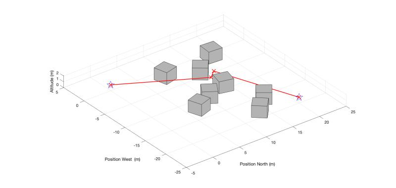

Autonomous Drone Project (In Progress)
Status: Actively under development — focusing on ArduPilot, ROS, and autonomous navigation systems.

Project Overview
Self-directed, ongoing project to develop practical skills in autonomous systems by modifying a hobby-grade FPV drone to operate with ArduPilot and ROS-based control software. The objective is to achieve autonomous navigation and obstacle avoidance using onboard sensors and simulation environments.
Objectives & Progress
- Integrate ArduPilot firmware with ROS for high-level mission scripting and autonomous control
- Develop a Gazebo-based simulation environment to safely test flight algorithms
- Implement real-time obstacle detection and avoidance using onboard sensor data
- Tune PID controllers for flight stability and waypoint navigation
- Future work: integrate computer vision for mapping and object recognition
Tools & Skills
- ROS, Gazebo, and ArduPilot
- PID control tuning and sensor calibration
- IMU, GPS, and LiDAR integration
- Simulation-based testing
- Autonomous navigation and control systems
← Back to Projects